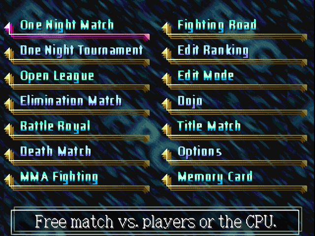
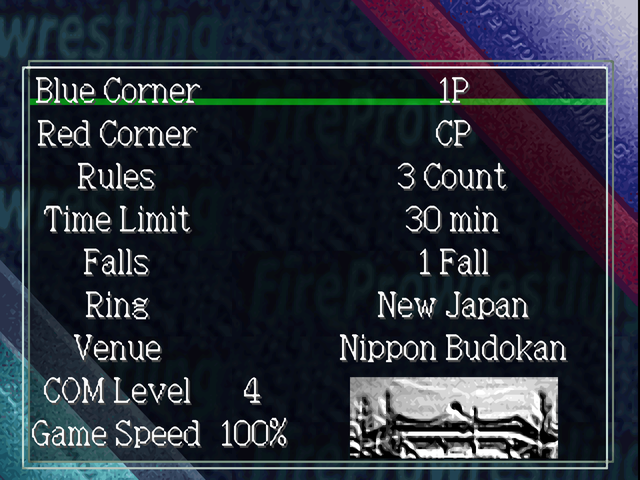
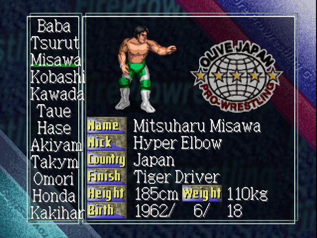
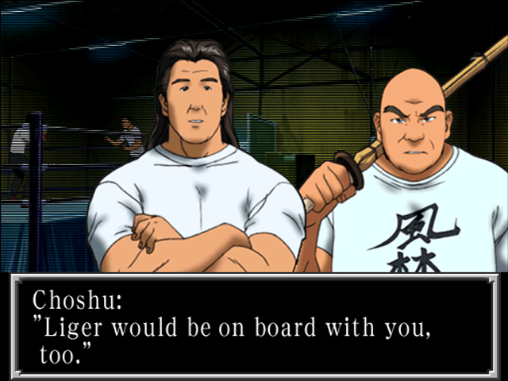
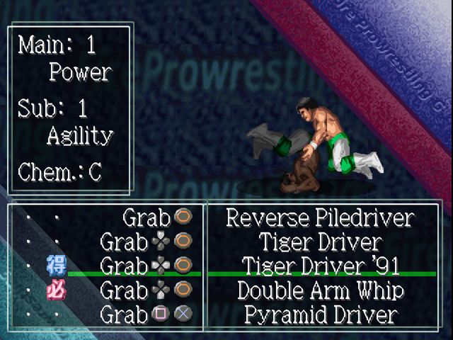

The Game

Fire Pro Wrestling G (ファイヤープロレスリングＧ) is a wrestling game by Human for the Sony PlayStation, released in Japan in 1999. It was never released outside Japan. Like the rest of the Fire Pro series it is a 2D wrestling simulation: matches are won by wearing an opponent down with the right moves at the right time, not by button mashing. Its 194 wrestlers stand in for real ones from Japan, America and Mexico under made-up names; the translation shows the real names, and the Fake Names patches keep the game's own.
What sets the game apart:
- Fighting Road. A story mode with 522 scenes: train in a dojo, get signed by one of six companies and wrestle a whole career, with dialogue choices, a hidden popularity score and dozens of endings (Fighting Road).
- A big roster and move list. 194 wrestlers in 15 promotions, about 960 moves, and an Edit Mode that builds new wrestlers from the ground up: looks, 57 move slots, ratings and the CPU's fighting style.
- Edit Ranking. Your edit wrestler fights up an underground shoot-fighting ladder under CPU control, and every few wins unlocks new parts for Wrestler Make (Edit Ranking).
- Every way to wrestle. Singles and tag, tournaments, leagues of up to 64, 5-on-5 elimination, battle royals, a bomb death match and no-rules fights in an octagon (Modes).
- A Dojo. The first tutorial in the series in years, teaching grapples, counters and escapes step by step (Dojo).
Which Patch
The English translation comes as patches for your own copy of the game: Fire Pro Wrestling G (Japan), serial SLPS-02065. The later Spike Library reissue (SLPS-02817) is a different disc and won't patch. The download holds five patches; pick one:
| Patch | What it is |
|---|---|
| (English) | The translation, with the real names of the wrestlers, promotions and referees (Riki Choshu, New Japan). Everything unlocks as you play, as in the original. |
| (English) (All Unlocked) | The same, with everything open from the start: every wrestler, every Edit Ranking reward, and the Fighting Road clear extras. It also adds unused heads and body parts found on the disc to Wrestler Make, and fixes three moves (Q&A). |
| (English) (Fake Names) | The translation with the game's own stand-in names (Hurricane Rikimaru, View Japan). Unlocks as in the original. |
| (English) (Fake Names) (All Unlocked) | The Fake Names translation with everything unlocked and the three move fixes. |
| (Japan) (All Unlocked) | The original Japanese game with everything unlocked and the three move fixes. |
Use the Names switch in the sidebar to see the names of the version you play. The patches don't change the save format: saves from the Japanese game work with all of them.
Memory Card Tips
- Everything the game keeps (edit wrestlers, groups, records, unlocks, Edit Ranking progress) goes in one file of 10 blocks on the card in slot 1.
- Save from Memory Card > Save on the mode select, from Save in Edit Ranking, and at the prompt between Fighting Road scenes (three story slots).
- With an All Unlocked patch, loading an old save also unlocks everything in it.
Your First Match
Fire Pro plays differently from most wrestling games: there are no health bars and no button mashing. A match is won by wearing the opponent down and pressing the right button at the right moment. These steps get you through a first match; the Dojo teaches the same with practice.
- Pick One Night Match on the mode select. The settings screen comes next: leave everything as it is and choose - Next -.
- Choose your wrestler and the opponent. ○ confirms, × goes back. The opponent is the CPU at level 4 of 10.
- Strike first. □, × and ○ are weak, medium and strong strikes. Weak strikes are fast and safe.
- Grapple with one well-timed press. Walk into the opponent and the two lock up by themselves. Press □ once, right as you grab him. Pressing early or repeatedly loses the grapple.
- Work up from weak to strong. Open with a big move and you'll often get reversed. Use weak and medium grapples until the opponent slows down, then the strong ones (○), and save the finisher for last.
- Pin. Pins are moves like any other, set in the downed-opponent slots, so which button pins depends on the wrestler: usually × at the head of an opponent lying face up. His profile in Wrestlers and Moves shows them.
- Kick out and escape. When you're pinned, press × again and again. In a hold, mash the D-pad.
The rest is in Controls and How Matches Work.
Controls
The game has no controls screen; the Dojo is its lesson. Most of what matters happens with a few buttons pressed at the right moment: Fire Pro rewards timing over speed. A DualShock or an analog pad works as well as the standard pad.
Buttons
The game calls its attack buttons A, B and C (weak, medium, strong); Move Edit shows them as the PlayStation's own symbols.
| Button | What it does |
|---|---|
| D-pad | Walk. Held with an attack button, picks the directional version of a move. Mash it to escape holds and to win a test of strength. |
| □ | Weak strike; weak grapple (A). |
| × | Medium strike; medium grapple (B). Press it repeatedly to kick out of a pin. |
| ○ | Strong strike; strong grapple (C). |
| □+× | Special move (A+B): standing, in a grapple, from behind, or off the top rope. |
| △ | Run, with a direction. In a grapple: Irish whip. |
| R2 | Catch your breath. With a direction toward your partner: tag. |
| R1 | Move around the opponent; drag a downed opponent. |
| L1 / L2 | Taunts: the wrestler's two Taunt moves. |
| Start | Pause. |
Grappling
Walk into your opponent and the two lock up by themselves: there is no grapple button. Press once, right as you grab him. The first well-timed press wins the grapple; pressing early or repeatedly loses it. A strong move against a fresh opponent usually gets reversed, so wear him down with weak and medium moves first. If both wrestlers press at the same moment early in the match, they go into a test of strength: mash the D-pad to win it.
| In a front grapple | Do this |
|---|---|
| Weak, medium or strong move | □, × or ○, alone or with Up, toward him or Down: four moves for each button |
| Special move | □+× |
| Irish whip into the ropes | △ |
| Whip into a corner | With the opponent on a diagonal line to a corner: Left or Right + △. He hits the turnbuckle and slumps there. |
| Elsewhere | Do this |
|---|---|
| Behind the opponent | Walk into his back to lock up, then the same buttons and timing: □, ×, ○ (also with a direction away from or toward him), or □+× |
| Opponent behind you | □ or ×, timed, to reverse it |
| Opponent slumped in the corner | Lock up quickly, then ○ with Up, toward him or Down. Avalanche moves off the top rope are in this list. |
Running and Flying
| To | Do this |
|---|---|
| Run | △ with a direction. You bounce off the ropes. |
| Running attack | While running, □ or ×, timed. Whip him into the ropes first for easier aim. |
| Counter a running opponent | □ or ×, timed as he comes off the ropes |
| Hit a foe slumped in the corner | Run at him and hold ○ |
| Dive off the top rope onto a downed foe | Knock him down near a corner (a medium grapple works well), climb up quickly, then □ |
| Dive onto a groggy, standing foe | Leave him dazed near a corner (a strong grapple does it), climb up, then ○ |
| Other dives | × and □+× from the top rope. Whether a wrestler can climb at all is his Post skill (Skill Edit). |
Pins, Holds and the Mat
| To | Do this |
|---|---|
| Attack a downed opponent | Get close, then × or ○. The move depends on whether he lies face up or face down and whether you stand at his head or his legs: eight moves in all. |
| Pin | Pins are moves like any other, in the downed-opponent slots (Body Pin, Half Ebi Pin and so on). Most wrestlers pin with ×. |
| Kick out of a pin | Press × again and again. How much spirit you have left helps. |
| Escape a hold | Mash the D-pad. |
| Rope break | Automatic when the wrestler underneath reaches the ropes, if the Rope Check rule is on. |
| Win by submission | Only holds that can make him give up win a match: about 115 of them. Other holds wear him down but never end it. |
Tag Matches and Outside
| To | Do this |
|---|---|
| Tag your partner | In your corner, R2 with a direction toward him |
| Team moves | Each wrestler has double- and triple-team moves, in front, from behind and in the corner, used when two or three of your team are on one opponent. |
| Count-outs | With the Ring-out Ct rule on, get back in before the count ends. A wrestler's Ring Return skill sets how quickly he comes back by himself. |
Menus
Confirm with ○, go back with ×. On the settings screen, Up/Down picks a row and Left/Right changes it. In Move Edit, L1/R1 move between the columns (shout, finisher mark, move) and ○ on a move opens its list.
How Matches Work
Wearing Down
There are no health bars. Each wrestler has hidden stamina and spirit, and every move takes some of each. Moves also hurt one or more body parts, neck, arms, back and legs, each with its own damage, and drain breath; some draw blood. A worn-down wrestler shows it: he gets up slowly, staggers, and his big moves get through. A wrestler loses a pin or gives up in a hold when he has too little left.
How much a move does depends on the two wrestlers' ratings (Param. Edit): each move rolls the attacker's main and second attack ratings against the defender's two defence ratings. The main rating counts three times as much as the second. A wrestler's finisher gets +2 on both attack ratings and his signature moves +1.
Criticals
A critical is a sudden finish: one move leaves the opponent unable to go on. Each wrestler has a Critical type (Skill Edit), and each move says which types it can be a critical for:
- Finisher: only the wrestler's own finisher can be a critical. Most of the roster (142 wrestlers) has this type.
- Striking, Suplex, Power, Technical, Submission: any move of that kind can be. Few wrestlers have these: 20 Striking, 16 Submission, 8 Technical, 5 Suplex, 3 Power.
The chance goes up the more worn down the defender is. A Striking, Suplex, Power or Finisher critical knocks the opponent out. A Submission or Technical critical drains everything the move hurts at once but leaves him conscious: with a hold that can make him give up, that wins the match.
Specials
Each wrestler can have one special skill (Skill Edit's Special, 15 edit points). What each does, from the game's code:
| Special | Effect |
|---|---|
| Star Power | When nearly beaten (under about 4% stamina), his moves can do 10% more damage. A second condition, not yet worked out, has to hold too. |
| Quick Up | When knocked down while hurt but still full of spirit, he stays down only an eighth as long. |
| Comeback | Under about 10% stamina with spirit to spare, his chance of a critical doubles. |
| Fast Start | While he is above 70% stamina, his signature moves get +2 instead of +1 to both attack ratings. |
| Guts | When his stamina is nearly gone, he loses spirit at half the rate, so holds take longer to make him give up. |
| Fightback | Under about 2% stamina, +1 to both attack ratings on every move. |
| One-Hit KO | His finisher does 2.5 times its damage, the first two times he uses it. |
| Bleeding | While he is bleeding, his moves do 5% more damage. |
Strategy
- Build up. Go from □ to × to ○ grapples, and use the special and the finisher only when the opponent is clearly worn down.
- Time, don't mash. One press as you lock up. Mashing loses grapples.
- Work a body part. Moves that hurt the same part add up; a wrestler's durability for that part (Skill Edit) decides how long he lasts.
- Set up the dives. A medium grapple near a corner leaves him lying there for a dive; a strong one leaves him groggy on his feet.
- Know your submission holds. Only some holds can make an opponent give up; check your wrestler's moves in Wrestlers and Moves.
- Rest. Hold R2 when you have space, to get your breath back.
Match Rules
Match Settings

Every match mode starts on the same settings screen. Each mode fixes some rows (shown grey) and picks its own defaults; - Next - goes on to wrestler select.
| Setting | Choices | Notes |
|---|---|---|
| Blue Corner / Red Corner | CP, 1P, 2P, 3P, or a pair (1P/CP, 1P/2P, 2P/3P, CP/CP and so on) | Who controls each side. A pair makes it a tag team. Third and fourth players need a Multi Tap. |
| Match Type | Single, Tag, Mixed | Tournaments and leagues: singles or tag for the whole event. |
| Rules | 3 Count, 2 Count, Pinfall Only, Submission Only | How a fall is won. |
| Time Limit | 5, 10, 15, 30, 45, 60 min, No Limit | A match still going at the limit is a draw. |
| Bomb Timer | 1, 5, 10, 15, 30, 45, 60 min, No Limit | Death Match only: when the ring explodes. |
| Falls | 1 Fall, 2 of 3 Falls | |
| Ring | 16 rings named after promotions and factions (HWA, New Japan, nWo, All Japan, FMW, WAR and more), plus the Death Match ring and the Octagon Ring in their modes | The look of the mat and the apron. |
| Venue | Nippon Budokan, HUMAN DOME, Yurakuen Hall, Murakawa Town Gym, Bayside Coliseum, Kawashima Stadium, RANDOM | The arena around the ring. |
| COM Level | 1-10 | How well the CPU wrestles. 4 by default. |
| Game Speed | 100% up to 800% | Faster speeds are for watching CPU matches. |
| COM Skip | ON, OFF | Tournaments and leagues: CPU-against-CPU matches are decided without being shown. |
| Referee | T. Hattori, J. Higuchi, Soranaka, T. Tanabe | |
| Match BGM | Ring-Side, Biorhythm, Fujiyama, Blue-Thunder, and later FR:GOOD, FR:BAD, Musashi and Hikawa | The match music. FR:GOOD and FR:BAD come with clearing Fighting Road, Musashi and Hikawa with the top Edit Ranking reward. |
Rule Switches
Six ON/OFF rules at the bottom of the settings:
| Switch | When ON |
|---|---|
| Rope Check | Rope breaks: a hold or a pin is broken when the wrestler underneath reaches the ropes. |
| Lumberjack | Wrestlers at ringside throw anyone who falls out back into the ring. |
| Tornado | Tag matches: all four wrestlers fight at once, with no tags. |
| Cut Play | Tag matches: partners may come in to break up pins and holds. |
| Foul Count | The referee counts illegal moves and choking, and disqualifies a wrestler who keeps on. |
| Ring-out Ct | Count-outs: a wrestler outside the ring too long loses. |
Results
A match ends by Pinfall, Submission, KO (including a critical), Ring-out, DQ or a draw: Time-up, Double Ring-out or Double KO. The winner's screen shows Victory, or Champion after a tournament final, Conquest, and Title Won or Title Defended in Title Match.
Modes
Fourteen modes, in the order of the mode select:
| Mode | What it is |
|---|---|
| One Night Match | A single match against players or the CPU. |
| One Night Tournament | A knockout tournament for up to 16 entries. |
| Open League | A round robin for up to 64 entries. |
| Elimination Match | Five-on-five team battles. |
| Battle Royal | Everyone in the ring at once, up to four. |
| Death Match | Bombs explode when the timer runs out. |
| MMA Fighting | No-rules fights in an octagon. |
| Fighting Road | The story mode. |
| Edit Ranking | Your edit wrestler fights up a ranking of 30, under CPU control. |
| Edit Mode | Make wrestlers and groups. |
| Dojo | The tutorial. |
| Title Match | Matches for the four HWA belts. Locked until Fighting Road is cleared. |
| Options | Sound, zoom, story progress, staff credits. |
| Memory Card | Save, load, trade wrestlers, PocketStation. |
One Night Match
A single match: singles, or tag when a corner holds a pair. Any side can be a player or the CPU, so it is also where you watch two CPU wrestlers. Choose the settings, then each wrestler, promotion by promotion; every roster wrestler has four costumes.

One Night Tournament
A knockout tournament for 3 to 16 entries, each a player or the CPU. Name it, enter the wrestlers, then play the bracket with Match, let the CPU play on with Auto, or Save and Quit to come back later (LOAD on the next visit). Tournament matches have no time limit, one fall and no count-outs, so every match has a winner. The winner gets the Champion screen.
Open League
A round robin for 4 to 64 entries. Every entry meets every other; the table ranks them by points (Pt), with the points difference (Diff), wins, win percentage and streaks. The menu has Match, Rankings, Auto, Save and Quit, and the league can end with a final league among the leaders.
Elimination Match
Five-on-five team battles. Each team has five places, Lead, Second, Middle, Vice and Captain, and there are three formats: Elimination (the winner stays on), Round Robin, and Round Robin (Tug). Pick from about 40 preset teams (WCW Main, nWo Army, AJPW Big 5, RINGS Best and more; ten of them appear after Fighting Road is cleared) or build your own in Team Edit.
Battle Royal
Up to four wrestlers in the ring at once, last one standing wins. Three kinds: Normal, Endless, and Over the Rope, where a wrestler thrown over the top rope is out.
Death Match
A single match or a Deathmatch Tournament in the special death match ring. The Bomb Timer (15 minutes by default) counts down, and when it runs out the ring explodes. Rope breaks, fouls and count-outs are off.
MMA Fighting
A single match or a tournament (the bracket calls it the Gruesome Fighting tournament) in the Octagon Ring: singles only, Submission Only, and no rope breaks, fouls or count-outs. With no ropes to bounce off, win by submission, KO or critical.
Dojo
The tutorial, with Coach Kotetsu Yamamoto. One lesson after another, most needing three successes to move on: weak, medium and strong grapples; the test of strength; grapples from behind and escaping them; counters after an Irish whip; running moves; whipping a foe into the corner and running in; corner grapples; attacking a downed foe; escaping holds; kicking out of pins; and diving off the top rope onto a downed foe and a groggy standing one. It is the quickest way to learn the timing (Controls).
Title Match
Locked until Fighting Road has been cleared once (open from the start with an All Unlocked patch). Four belts: HWA Heavy Single, HWA Heavy Tag, HWA Jr. Hvy Single and HWA Jr. Hvy Tag. Each starts vacant; the first winner is the 1st Champion, and the game keeps the lineage with each champion's defenses (Past Champions). Vacate Title strips the champion.
Options
| Option | Choices |
|---|---|
| Match Zoom | Whether the match view zooms in and out. |
| Sound Mode | Stereo, Mono |
| Match BGM Volume / Theme Volume | OFF, Low, Mid, High: the match music and the entrance themes. |
| FR: Scenarios Done / FR: Wrestlers Found | How much of Fighting Road you have seen: scenes reached and characters met. |
| Staff Credits | The staff roll, after Fighting Road is cleared. |
Memory Card
| Item | What it does |
|---|---|
| Load / Save | Load or save everything: modes' progress and edit wrestlers. One file of 10 blocks. |
| Trade | Copy edit wrestlers to or from the card in slot 2. |
| PocketStation | Download the game's PocketStation program (5 blocks). |
| Send / Receive | Put an edit wrestler on a PocketStation to train, and take him back. Training earns edit points in Edit Ranking. |
Fighting Road

Fighting Road is the story mode: you create a young wrestler, train at Coach Kotetsu Yamamoto's dojo beside your classmate and rival Koichi Sakagami, and at graduation one company signs you. That decides which of six careers you play, from rookie to the top or out of the business. The story is told in scenes of dialogue with matches between them: 522 scenes, about 360 of them with a match. One playthrough is roughly 20 to 25 matches.
Choose Fighting Road on the mode select, then NEW GAME or LOAD.
Starting Out
- Your wrestler. You build the hero at the start with a limited number of edit points: 160 at first, more once the story has been cleared (Clearing Fighting Road). Before every story match the game asks Ready for the match?, and Edit my wrestler. lets you change him, moves included.
- Moves open up as you go. Move Edit offers the story hero a short list of moves early on, a longer one later, and the full lists from the middle of the story.
- Saving. Between scenes the game asks Save your progress so far?: Don't save., Save. or Save and quit., with three save slots. Pick up again with LOAD.
- Losing doesn't end the story. The story takes a different path after a loss, often toward a worse ending. There is no retry: if a match matters to you, save before the scene and load again.
- The matches are set. Each story match has its opponent, partner, venue, rules and CPU level fixed; the CPU level climbs from 1 in the dojo to 6 at the top.
What the Game Tracks
Hidden values steer the story. None of them is shown on screen.
| Value | What it is |
|---|---|
| Ambition, Babyface, Passion | Three character stats, changed by your answers in dialogue. A few branch points check them: for example, in New Japan, Ambition 4 or more takes you into nWo JAPAN. |
| Star Points | Your popularity. Some scenes and answers add or take away points (a great promo is +20), matches may change them too, and most endings check them: in many routes the better ending needs about 54 or more. |
| Match result | Whether you won the match just played. Many scenes open differently after a loss, and some routes branch on it. |
| Fighting style | Ten counters filled by how you wrestle: Striking, Submissions, Throws, Power, Technique, Flying, Rough, Performance, Shoot and Chokes. Branches check which one is highest, so the moves you use steer the story. |
| Promotion points | Five hidden scores, one per company, raised by your answers in the dojo. They only matter at graduation. |
| Champion and route flags | Markers the story sets on the way (titles held, alliances made) and checks later in the same route. |
Choosing Your Company
The dojo takes four scenes and three matches (two against Sakagami, one against the coach), with seven three-way answers in the dialogue. At graduation (scene 3) one company makes you an offer:
- If your wrestler is not a heavyweight, Great Sasuke recruits you to Michinoku Pro, whatever your answers were.
- Otherwise your most-used fighting style in the dojo matches gives one company 3 points and another 1 (table below).
- Each dojo answer gives a point to one company or more. The company with the most points makes the offer; ties go to New Japan, then All Japan, FMW, America, and UWF last.
| Most-used style | +3 points | +1 point |
|---|
The answers and the points each gives are in Choices and Checks.
The Six Routes
| Route | Scenes | Story |
|---|---|---|
| New Japan | 4-94 | Young lion in the big company, in the years of nWo JAPAN. |
| All Japan | 95-157 | The Four Pillars era: from the undercard toward the Champion Carnival. |
| FMW | 158-248 | Hardcore wrestling, factions and the return of Onita. |
| UWF | 249-396 | Shoot-style wrestling as the UWF breaks apart. The longest route, and one with no dialogue choices: your fighting style decides. |
| America | 397-457 | A start in WCW, in the Monday Night War. |
| Michinoku Pro | 458-517 | The junior heavyweight route, with training abroad and a world juniors tournament. |
Branches and endings by route (spoilers)
- New Japan (10 ending scenes). Early on you join nWo JAPAN (Ambition 4 or more, or a mostly Rough or Technique style) or stay with the regular army. Either way the endings are the same five: Wrestler of the Year after winning the summit match with 73+ Star Points; a best bout and then retirement with fewer; or Onita invades, and you beat him or lose to him, or slump into retirement.
- All Japan (6). Your style picks your trial series opponent (Striking: Kawada; Power or Throws: Taue; otherwise Hansen). With 45+ Star Points at scene 131 you go for the titles, otherwise you are stuck in the undercard. Endings: ace of All Japan after the Champion Carnival, best bout and Wrestler of the Year, best bout then retirement, a knee or a back injury, or joining the Heisei Ishingun.
- FMW (13). When Onita returns your style picks a side: Performance or Rough, Fuyuki's Team No Respect; Flying or Technique, the regulars with Hayabusa; anything else, Onita's Team Zero. The endings run from a third golden age for FMW, a new outlaw legend or beating Fuyuki, to injury, getting fired, or the company's decline. Star Points 54 decides most of them.
- UWF (10). When Newborn UWF breaks up your style picks the faction: Chokes, Submissions or Throws, Maeda's RINGS; Shoot or Striking, Takada's UWF-i; otherwise Fujiwara Gumi. Endings: years as the ace, years of vale tudo, beating Sakagami at the Dome, beating Satake, coaching, or a knee that gives out. Star Points 54 (51 on some branches).
- America (6). Passion 5 or more takes TAKA's offer to the WWF; otherwise you stay in WCW, siding with Sting (Babyface 3 or more) or with Hogan's nWo. Endings: ending Goldberg's streak, a reunion with Sakagami, a failed push after losing to Hashimoto, or a storyline with Mr. Socko.
- Michinoku Pro (4). Sasuke sends you abroad by style (Shoot, Submissions or Throws: New Japan; Performance, Power, Rough or Striking: WCW; otherwise Mexico), then comes a world juniors tournament. The best ending needs the final won against Sakagami with 51+ Star Points.
Every ending, good or bad, counts as clearing Fighting Road. The exact conditions are in the Route Map.
Tips
- To reach a company, wrestle the three dojo matches mostly in a style that gives it +3 (table above) and pick the answers that favour it.
- Michinoku Pro needs a junior. The hero's division offers only Heavyweight until the story has been cleared once, so on a first game the junior route is out of reach. Clear any route first, or use an All Unlocked patch.
- Your style keeps mattering after graduation: it picks your faction on most routes.
- Star Points decide most good and bad endings. Win the big matches and take the bold answers in promos.
- Any ending unlocks everything the story unlocks, bad endings included (Clearing Fighting Road).
Route Map
Every scene, choice, branch and ending, read from the game's own scene scripts. Pick a route, then click a box: the panel beside the chart shows the scene's summary, its match, every answer with what it changes, and where each exit leads. Dialogue shows or hides each scene's lines in the chart. Links like #scene-3 open the map on a scene.
Open the route map (spoilers: every scene, choice and ending)
Choices and Checks
Every dialogue answer in Fighting Road and what it changes, and every point where a stat, the match result or your style decides the path. Answers with no listed change only alter the dialogue.
Show the tables (spoilers)
| Scene | Situation | Answer | Changes | Leads to |
|---|
Where the game checks
| Scene | Route | Condition | Goes to |
|---|
Notes: the weight class check at graduation reads the first byte of your wrestler's record (1 for every heavyweight). The game also keeps two promotion scores that your answers raise but nothing reads, and scene 3 holds an offer from New Japan with Liger that can never be picked: traces of a cut route (Cut and Unused Content). Scenes 520 and 521 are only used by the title screen's demo.
Edit Mode
Edit Mode makes new wrestlers and groups. Its menu: Wrestler Edit, Group Edit, Rename, Move Wrestler and Mode Select. Wrestler Edit holds the editors:
| Item | What it does |
|---|---|
| Base Wrestler / Base Edit | Start from a copy of a roster wrestler, or of one of your edit wrestlers: his looks, moves, ratings and CPU logic. |
| Appearance | Wrestler Make: stance, size, head, body parts and colours (Appearance). |
| Skill Edit | Profile, fighting style, critical type, special skill, recovery and durability, theme music and voices (Skill Edit). |
| Param. Edit | The ten attack and ten defence ratings (Param. Edit). |
| Move Edit | The 57 move slots, the finisher and the signature moves (Move Edit). |
| CPU Logic | How the CPU wrestles with him (CPU Logic). |
| Name Entry | His names, nickname, and a name of your own for his finisher (Move Name). |
| Save Menu | Save, load and delete edit wrestlers (Groups, Names, Saving). |
Edit Points
Skill Edit and Param. Edit share one budget of edit points. Every Skill Edit choice above the cheapest costs points (the costs are in the table below), and every rating costs one point for each step above 1. Skill Edit shows how many points the next step needs, and refuses it when the budget is spent. The points come from:
- the wrestler's starting budget;
- Edit Ranking: one point for each win, and a bonus at the top (Edit Ranking);
- PocketStation training, applied in Edit Ranking with Pocket St.
The Fighting Road hero has his own starting budget: 160, and up to 280 once the story is cleared (Clearing Fighting Road). The 30 wrestlers of Edit Ranking were built on 200 to 500 points.
Appearance
Wrestler Make builds the look from rows: Stance (the idle pose: Strong, Technic, Amateur, Power, Lucha, Shoot, Mystery, Koppo, Kobudo), Size (S, M, L), Face, then eight body parts, Chest, Waist, Bicep, Arm, Wrist, Thigh, Shin and Ankle, and finally the colours.
- Faces. 284 heads at the start, 298 with every Edit Ranking reward. Picking a roster wrestler's head also brings his costume, colours, stance and size; other heads come with a plain body.
- Parts. Each part has its own list, from trunks and boots to gis, suits and tights; many come in up to four builds.
- Colours. 34 colours in ten groups (skin, trunks and gear, pads and boots, gloves and mask, hair), each with red, green and blue from 0 to 31. A colour can be copied to another, and a whole group can step through the game's stock colour sets.
- More parts come with the Edit Ranking rewards: bear, scarred, sumo, women's, panda, tanuki and kappa parts, mitts and paws (Edit Ranking Rewards). The English All Unlocked patch also adds 13 unused heads and some unused body parts found on the disc, as Extra 1 and Extra 2 in the lists.
Skill Edit
Every row of Skill Edit, with the edit points each choice costs. Rows without costs are free.
| Row | Choices | Points |
|---|---|---|
| Group | His promotion, or one of your groups. | |
| Div | Heavyweight, Junior Heavy, Freelance (and X) | |
| Ht / Wt | 150-220 cm, 40-250 kg | |
| Yr / Mo / Dy, Born | Birthday; one of 32 countries of birth | |
| Fight Style | Orthodox, Technician, Wrestling, Ground, Power, American, Junior, Luchador, Heel, Mystery, Shooter, Fighter, Grappler, Panther, Giant, Demonic | |
| Rev. | His reversal style: Orthodox, Technician, Power, Junior, Luchador, Heel, Mystery, All-round, Shooter, Fighter, Grappler, Giant, Demonic. The game also reads it when working out his opponents' chance of a critical against him. | |
| Critical | Finisher, Suplex, Power, Technical, Striking, Submission (Criticals) | 0, 20, 20, 25, 30, 30 |
| Special | None, Star Power, Quick Up, Comeback, Fast Start, Guts, Fightback, One-Hit KO, Bleeding (Specials) | 0, then 15 each |
| Recovery, Breathing, Spirit | C, B, A: how well he recovers stamina, breath and spirit | 0, 10, 20 each |
| - Bleeding (each) | C, B, A: the same while he is bleeding | 0, 5, 10 each |
| Neck, Arms, Back, Legs | C, B, A: how much each body part can take | 0, 2, 5 each |
| Speed | C, C+, B, B+, A | 0, 2, 6, 14, 24 |
| Climb | C, C+, B, B+, A: how fast he climbs the post | 0, 2, 4, 6, 8 |
| Post | No (can't climb), Climb, Run (runs up the post) | 0, 4, 12 |
| Ring Return | 0-20: the count at which he comes back into the ring | |
| Tagging | C, B, A | |
| Theme | 26 entrance themes, from Assault to Night-Mare | |
| V1 / V2 Tone and Type | His two shouts: a voice group (JP 1-4, Fgn 1-3, and Beast and two women's groups from Edit Ranking) and a voice in it |
Every wrestler's Skill Edit values are in his profile in Wrestlers and Moves.
Param. Edit
Ten attack ratings and ten defence ratings, each 1 to 10, at one edit point per step above 1. Every move names a main and a second attack rating and a main and a second defence rating; the main ones count three times as much (Wearing Down).
| Attack | Defence |
|---|---|
| Strikes | Strike Def. |
| Kicks | Kick Def. |
| Throws | Throw Def. |
| Submission | Sub. Def. |
| Chokes | Choke Def. |
| Power | Aerial Def. |
| Agility | Slam Def. |
| Strength | vs Lariat |
| Off. Skill | Def. Skill |
| Brawling | vs Brawling |
Move Edit

A wrestler has 57 move slots, one for each situation and button: four standing strikes, running attacks and counters, dives, thirteen front grapples, six from behind, two reversals, eight on a downed opponent, three in the corner, two taunts and six team moves. Each slot offers the moves of its kind, and a stronger button offers the weaker moves too: a strong grapple slot can hold any grapple. Moves lists them all.
- Finisher (the red 必 mark): exactly one. It shows on wrestler select, gets +2 on both attack ratings, and is the only move a Finisher-type wrestler can score a critical with.
- Signature moves (the blue 得 mark): up to four, +1 on both attack ratings.
- Shout: each move can come with his first voice, his second voice, or none.
- Move Edit shows the chosen move's Main and Sub ratings and how well it suits the wrestler (Chem.).
- Two moves, Muscle Buster and Phoenix Kick, join the lists at Edit Ranking reward level 9.
CPU Logic
CPU Logic sets how the CPU wrestles with him, situation by situation: apart, grappling, behind the foe, after an Irish whip, foe in the corner, foe down (near a corner, mid-ring, face up, face down), foe dazed, foe behind him, foe outside, taunting, and his Persona (Stubborn, Caution, Adaptable, Teamwork). Each situation has a column for how hurt the foe is (low, medium or high damage, nearly out), and each action a percentage: the chance the CPU picks it. Actions named after a button use that slot's move.
Every wrestler's CPU logic is in his profile (Wrestlers and Moves, the CPU Logic tab).
Groups, Names, Saving
- Group Edit makes your own promotions, with a logo painted in Group Logo. Move Wrestler moves a wrestler to another promotion; Rename renames the roster.
- Name Entry uses the game's kana and letter grids (they stay in Japanese). Move Name gives his finisher a name of your own.
- Save Menu: Save, Load and Delete. Deleting a wrestler also removes his records in Title Match, Open League, the elimination teams and the tournaments. The edit wrestlers are kept on the memory card with everything else (Memory Card); Trade copies them to another card.
- An edit wrestler has one look: all four costume choices on wrestler select show it.
Edit Ranking
An underground shoot-fighting ladder: in an arena funded by the Bellwood Foundation, the world's rich watch fights between men too strong or too brutal for the spotlight. Your edit wrestler enters at the bottom of a ranking of 30 and challenges those above him. You don't control the matches: you shape him with his ratings and CPU logic, and the CPU fights.
| Menu | What it does |
|---|---|
| Fight | Fight a higher-ranked wrestler. Unmet opponents show as ????. |
| Edit | Change his ratings and CPU logic. |
| Save | Save your progress. |
| Pocket St. | Turn PocketStation training into edit points. |
Each win earns an edit point, and wins raise the reward level, which unlocks new Wrestler Make parts, voices, two hidden moves and two music tracks for every edit wrestler (Edit Ranking Rewards). The level is kept in the save and never goes down. The 30 opponents are built-in edit wrestlers, each with a profile of his own; their moves and ratings are in Wrestlers among the Edit Ranking group.
Wrestlers and Moves
Every wrestler and move, from the game's own data. Click a wrestler for his full profile: his Skill Edit values, his ratings, every move he uses and how the CPU fights with him. Each profile has its own link to share, and can be compared with a second wrestler.
The 194 wrestlers of the roster by promotion, in the game's order, then the 30 fighters of Edit Ranking. A lock marks the 25 wrestlers who are locked until Fighting Road is cleared.
| Name | Promotion | Division | Style | Critical | Finisher |
|---|
Every move Move Edit offers, by the kind of move it is: the same lists Move Edit offers for each slot. A slot for a stronger button also takes the moves of the weaker ones. Point at a move, or tab to it, for its damage (stamina, spirit, breath and each body part), its ratings and its critical types. These are the move's base values: the wrestlers' ratings change what it really does.
Secrets
Fire Pro Wrestling G has no unlock codes: everything opens by playing Fighting Road and Edit Ranking. The All Unlocked patches open it all from the start.
Locked Wrestlers
25 wrestlers start locked, and clearing Fighting Road frees all of them at once (any ending will do):
The 25 locked wrestlers
Clearing Fighting Road
Reaching any ending of Fighting Road, good or bad, unlocks:
- the 25 locked wrestlers;
- Title Match mode;
- the FR:GOOD and FR:BAD tracks in the match music;
- ten more preset teams in Elimination Match;
- Staff Credits in Options;
- Junior Heavy for the story hero, which opens the Michinoku Pro route;
- more starting edit points for the story hero: 200, then 240 with the top Edit Ranking reward too, and 280 when you have also seen 30% of the story's scenes (Options shows how many).
Edit Ranking Rewards
Wins in Edit Ranking raise the reward level. Each level opens new things in Edit Mode for every edit wrestler:
| Level | After | Message | What it adds |
|---|---|---|---|
| 1 | 4 wins | Got bear parts & beast voice! | A bear version of every body part, 2 bear faces, the Beast voices |
| 2 | 7 wins | Got scar parts! | Scarred parts for the body, arms, wrists, legs and shoes |
| 3 | 8 wins | Got the sumo face! | 1 face |
| 4 | 13 wins | Got women's parts & voice! | About 50 women's clothing parts, 3 faces, two women's voice groups |
| 5 | 15 wins | Got panda parts! | A panda version of most parts, 1 face |
| 6 | 16 wins | Got tanuki parts! | Tanuki upper and lower body, 1 face |
| 7 | 19 wins | Got kappa parts! | Kappa upper and lower body, 2 faces |
| 8 | 23 wins | Got mitt parts! | Mitts |
| 9 | 24 wins | Got hidden moves! | Muscle Buster and Phoenix Kick in Move Edit |
| 10 | 28 wins | Got the girl's face! | 4 girl's faces, plus Paw Gloves and Paw Boots, which the message doesn't mention |
| 11 | 29 wins | (no message) | Musashi's and Hikawa's themes in the match music |
Button Codes
| Do this | For |
|---|---|
| Hold L1+L2+R1+R2 while a match loads | Musashi's theme as the match music |
| Hold L1+L2+R2 while a match loads | Hikawa's theme as the match music |
| Hold Left, Right or Down while a match loads | The referee in another colour |
| In a match, hold L1+R1 and press Select | Hides parts of the screen display, such as the clock |
Cut and Unused Content
- A cut recruitment. Scene 3 holds a New Japan junior offer with Liger ("Liger would be on board with you, too.") that can never be picked, and the game keeps two promotion scores nothing reads: a cut route.
- Moves never made. 113 named moves have no animation, among them the Gory Special and the Spine Buster.
- Unused heads and parts. 13 heads and some body parts sit on the disc unused. The English All Unlocked patch adds them to Wrestler Make.
- A developer menu, with a story scene jumper, an arena viewer, a sound test and a move editor, is still in the game code but can't be reached. The patches leave it closed.
More in the translation's hidden content notes.
Japanese Glossary
Terms you'll see in the original Japanese game. The translation shows the English.
| Japanese | Meaning | On screen in the translation |
|---|---|---|
| ファイティングロードfaitingu rōdo | fighting road | Fighting Road |
| ワンナイトマッチwan naito macchi | one-night match | One Night Match |
| グルーサムファイティングgurūsamu faitingu | gruesome fighting | MMA Fighting (mode select), Gruesome Fighting (tournament) |
| エディットランキングeditto rankingu | edit ranking | Edit Ranking |
| 道場dōjō | training hall | Dojo |
| 必殺技hissatsu waza | killer move | Finisher (the 必 mark in Move Edit) |
| 得意技tokui waza | favourite move | Signature move (the 得 mark) |
| 特殊スキルtokushu sukiru | special skill | Special |
| ハンマースルーhanmā surū | hammer throw | Irish whip |
| 力比べchikara kurabe | contest of strength | Test of strength |
| 先鋒・次鋒・中堅・副将・大将senpō, jihō, chūken, fukushō, taishō | the five places in a team match | Lead, Second, Middle, Vice, Captain |
| 野心・ベビーフェイス・熱血yashin, bebī feisu, nekketsu | ambition, babyface, hot blood | Ambition, Babyface, Passion (Fighting Road's hidden stats) |
| 団体dantai | promotion | Group (Edit Mode), promotion |
| セーブしますか？sēbu shimasu ka | save? | Save your progress so far? |
Q&A
Is there an English version?
Not from Human: the game was only released in Japan. This guide was written alongside an English fan translation, released as patches for your own copy of the game.
Real names or fake names?
Your choice: the English patches come with the real names or with the game's own stand-ins (Which Patch). The Names switch in the sidebar changes this guide to match.
Is this the Fighting Road of Fire Pro Wrestling World?
No. Fire Pro Wrestling World named its story mode after this one; G's Fighting Road is a different story, set in the Japanese and American wrestling of the late 1990s.
How do I unlock the hidden wrestlers?
Finish Fighting Road once, with any ending (Clearing Fighting Road). Or use an All Unlocked patch.
How do I get a particular company in Fighting Road?
Your style in the three dojo matches and your answers decide it; a non-heavyweight always goes to Michinoku Pro (Choosing Your Company).
Why do I keep losing grapples?
Pressing too early or more than once. Walk in and press once, right as you grab him (Grappling).
Why do my big moves get reversed?
The opponent is still too fresh. Strong moves only work once he's worn down: use weak and medium moves first (Strategy).
Why won't he give up?
Only some holds can make an opponent give up; others only wear him down (Pins, Holds and the Mat).
What are the three move fixes?
Three moves behave differently from the same move in another slot, and the All Unlocked patches fix them: the face-up Arching Boston Crab can now make the opponent give up, Low Blow from behind counts as a foul, and the Haruki Special from behind can be a critical. The other patches keep them as released.
Will the patches touch my saves?
No. The save format is unchanged, and saves from the Japanese game work with every patch. With an All Unlocked patch, loading an old save also unlocks everything in it.
Does the translation work on an emulator?
Yes: the patches make a disc image that runs in a PlayStation emulator. It has been tested in DuckStation.
How do I make a wrestler fight like someone in the roster?
Start from him with Base Wrestler in Wrestler Edit: you get his moves, ratings and CPU logic, then change what you like. His profile in Wrestlers and Moves shows everything you start from.
Credits and Legal
This guide is a non-commercial fan project, not affiliated with or endorsed by Human Entertainment, Spike Chunsoft or any successor. Fire Pro Wrestling G and its names, characters and trademarks belong to their owners.
The text is written in our own words from the game's code and data, its own Dojo lessons, and the sources below. It contains no scans or images from any printed guidebook. The screenshots are from the English fan translation.
The controls draw on BrownDerby's Fire Pro Wrestling G controls page on StrategyWiki and the PSX Data Center entry for the game. Details of the modes draw on the Japanese Wikipedia article on the game.
AI assisted with this guide.
The guide text is shared under Creative Commons Attribution-ShareAlike 4.0 (CC BY-SA 4.0; see LICENSE). You're free to share and adapt it, as long as you credit this guide and share alike.
Contributing
Corrections welcome: open an issue at github.com/kactusken/Fire-Pro-Wrestling-G-English, or with anything you would like added.